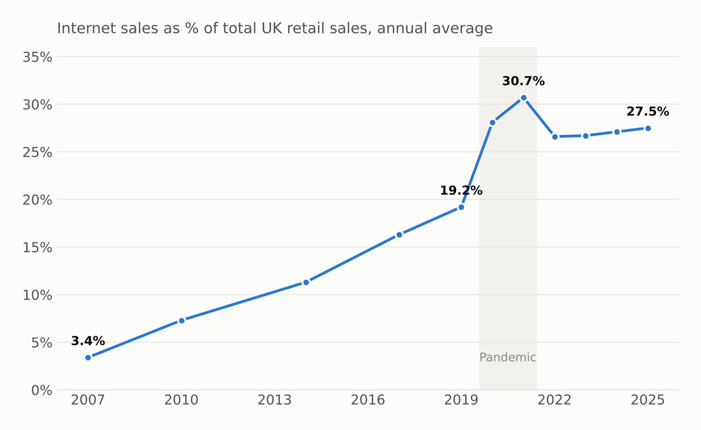
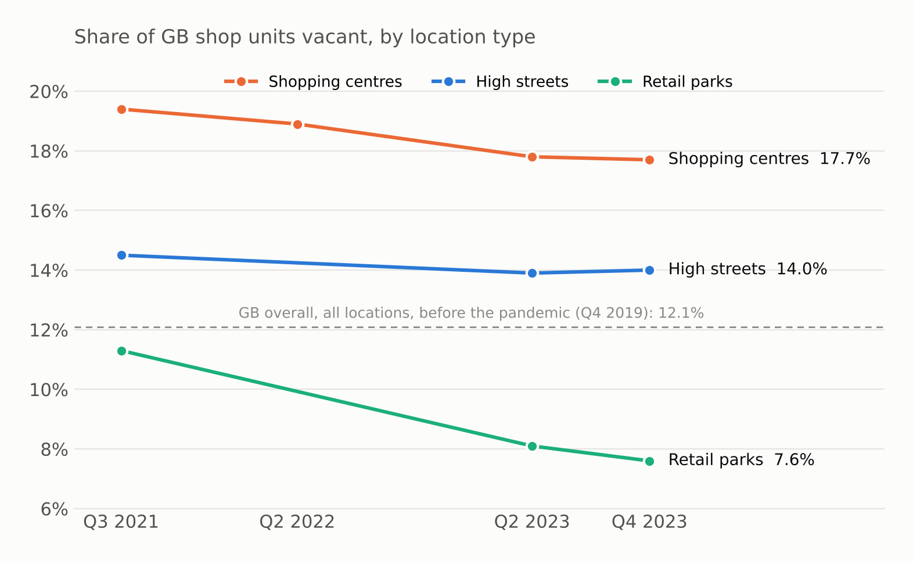
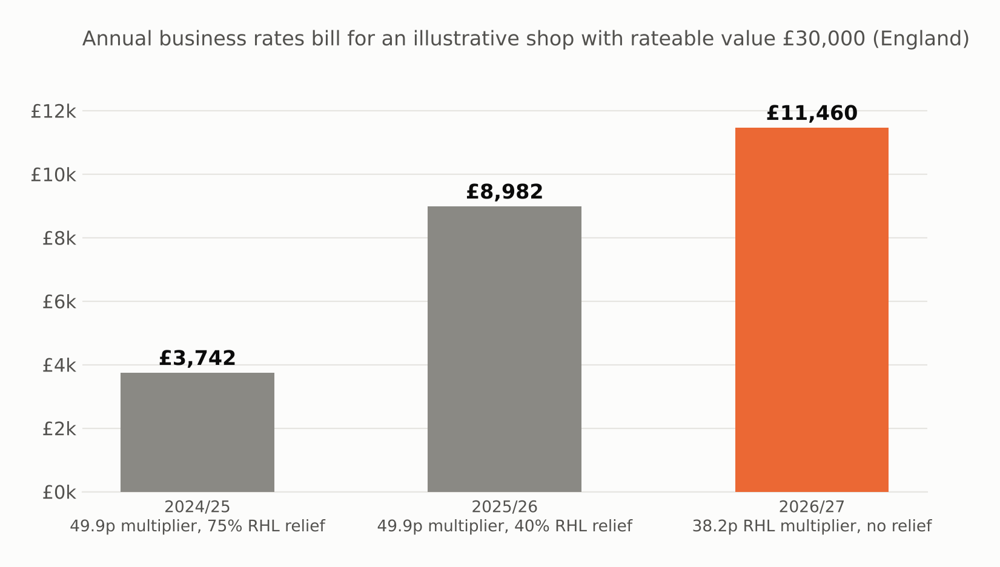
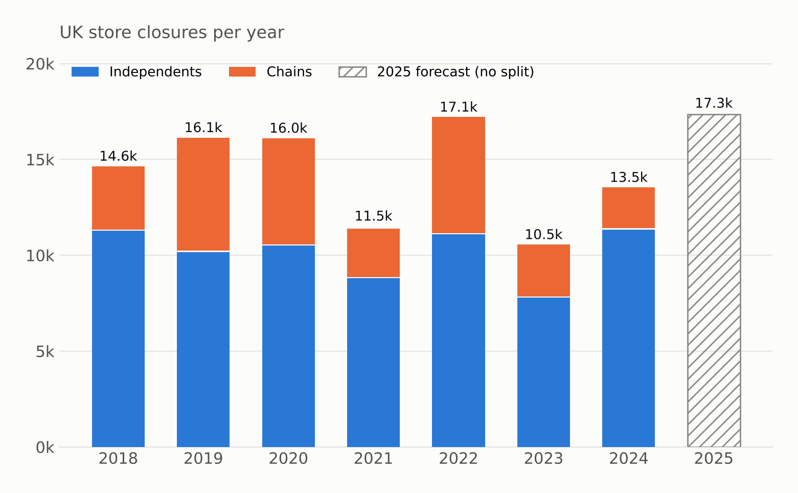

A five-year plan to bring town-centre shop vacancy down from 18% to the GB average of 14% by 2030
Northbridge should concentrate retail into a compact core, fill empty units fast using its new powers, and anchor the centre with food, leisure and homes.
27.5% of retail spending is now online and isn't coming back. Struggling towns have more than twice the retail space per person of thriving ones.
High Street Rental Auctions let the council let units empty for a year without landlord consent. Independents, 84% of closures, face a 28% rates rise in 2026/27.
In thriving centres food is £1 in every £4 spent, against £1 in £10 in struggling ones. A food and leisure anchor, events and town-centre homes bring footfall back.
Council leader and cabinet, who need a fundable plan with visible results within 12 months.




| # | Option | I | E | Quadrant |
|---|---|---|---|---|
| 1 | High Street Rental Auctions | 4 | 4 | Quick win |
| 2 | Rates transition grant | 3 | 3 | Quick win |
| 3 | Shrink the core, convert the edges | 5 | 2 | Big bet |
| 4 | Food and leisure anchor | 4 | 2 | Big bet |
| 5 | Meanwhile use and pop-ups | 2 | 5 | Fill-in |
| 6 | Town-centre data dashboard | 2 | 4 | Fill-in |
| 7 | Year-round events | 2 | 3 | Fill-in |
| 8 | Free parking | 1 | 2 | Money pit |
Vacancy down 1–2 points
Footfall above the 2025 baseline
Vacancy at 14% by 2030
18% → 14%
Halved
> 100
+10 pts
Set in plan
| Risk | Mitigation |
|---|---|
| Landlords resist auctions or conversions | Start with the longest-empty units, publish the data, offer partnership before compulsory powers |
| £5m is too little for conversions | Use council property first; bid for national regeneration funding; joint ventures with housing associations |
| Pop-ups don't become lasting tenants | Track conversion to longer leases; give successful pop-ups priority in auctions |
| National policy changes again | Review the rates grant yearly; build the plan on demand and supply, not tax |
Online share of retail. ONS Retail Sales Index, series J4MC (internet sales as % of total retail sales), annual averages; release of 22 May 2026 as reported by Eightx.
Store closures and job losses. Centre for Retail Research, 2018–2024 actual and 2025 forecast, via Insight DIY (31 Dec 2024).
Vacancy by location and region. BRC–Local Data Company Vacancy Monitor, Q3 2021–Q4 2023, via Insight DIY, Bira, Furniture News and Green Street News.
Footfall. BRC–Sensormatic IQ footfall monitor, published 9 January 2026.
Business rates, England. Retail, hospitality and leisure relief 2024/25–2025/26 (Armstrong Watson, May 2025); 2026/27 multipliers (Spelthorne Borough Council).
Retail space, spending mix, policy. Centre for Cities, Checking out: the varying performance of high streets across the country (July 2025), via Specification Online.
High Street Rental Auctions. In force in England from 2 December 2024 (Trowers & Hamlins summary).
About this case. Northbridge is an illustrative composite town, not a real client. Figures from secondary reports should be checked against the original publisher before formal use. Independent project; not affiliated with any consultancy.